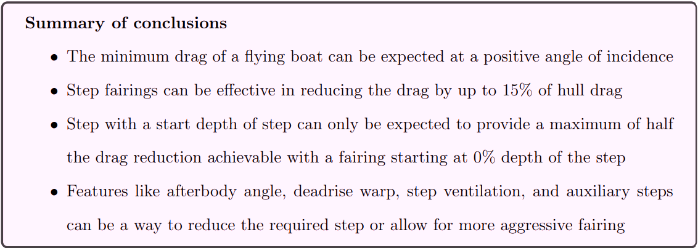

Aerodynamic Optimization of a Flying Boat Hull
NTNU, Norway, Dec 2024

This thesis investigated how to reduce the aerodynamic drag of a nine‑passenger electric flying boat hull, as part of the Noemi Aircraft Program. The work combines an extensive literature review, wind tunnel testing, and a CFD Analysis to study the impact of step geometry and fairings, afterbody (sternpost) angle, and hull incidence. Hydrodynamic implications are considered qualitatively to keep a balanced design.
The challenge of seaplane design
Seaplane design must satisfy both air and water performance. Hull features that are essential for water operations (step, chines, afterbody upsweep, deadrise) often penalize aerodynamics. The goal is to minimize aerodynamic penalty while retaining sufficient hydrodynamic performance.
Link to full thesis report.
Wind Tunnel Model
Historically, wind tunnel models have mostly been made from wood or milled aluminum. Due to resource limitations, 3D printing the model was used to create the model. The main drawbacks of 3D printing being surface finish and limited size, was solved with careful alignment of sections, and post sanding of the surface.